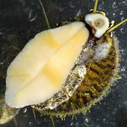
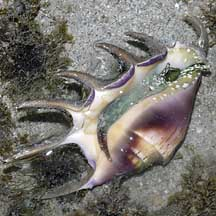
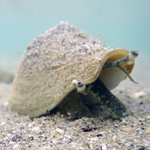
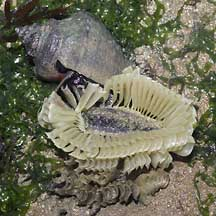
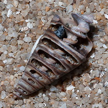
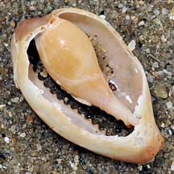
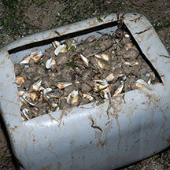

|
|
| gastropds text index | photo index |
| Gastropods Class Gastropoda updated Sep 2020
Almost everyone knows what a snail looks like. The familiar land snails that we see, however, are the tip of the snail iceberg. Most snails are marine! Sea slugs are sea snails that have lost their shells as adults. There are some land slugs too, but again, most slugs are marine. And marine slugs and snails can be quite beautiful. Where seen? You are almost certain to see a snail on almost every shore even when the tide is not very low. Snails and slugs are found on moist rocks and boulders, on mangrove trees and other hard surfaces near the sea. They also creep among the seagrasses, while small ones creep ON seagrasses and seaweeds. Others plough through the sand. Yet more specialise on plants and animals of the coral rubble area or reefs. What are gastropods? Gastropods belong to Phylum Mollusca. Gastropods include shelled snails as well as slugs without shells.There are about 30,000 known species of gastropods. They are thus the largest group of molluscs. The Class Gastropoda may be divided into these three subgroups: |
|
|
|
| Some typical gastropods |
 Snails with shells Various orders |
 Limpets Various orders |
 Nudibranchs Order Nudibranchia |
 Sacoglossans Order Sacoglossa |
 Sea hares Order Anaspidea |
 Onch sea slugs |
| Features: The snails that most of us are familiar with typically have a large muscular foot supporting a visceral mass (the rest of the body and internal organs). In most snails, the entire body can be retracted into a protective shell. 'Gatropoda' means 'stomach foot'. Gastropods indeed have a large obvious foot. Most creep along on their foot, but Conch snails can hop! |
 Large foot of Top shell Pulau Sekudu, Jan 05 |
 The body of a moon snail can expand to be MUCH bigger than the shell Changi, Jun 06 |
 Spider conch: a magnificent snail that hops! Labrador, Mar 05 |
| Shell facts: Many molluscs produce
a shell. A snail makes its own shell and stays in the same shell all
its life. It does not moult its shell like
a crab does. You can only remove a snail from its shell by killing
it. Shells sold as souvenirs are mostly obtained by harvesting living
snails and killing them. A shell is made mostly of calcium carbonate and shell material is added to both the outer edge as well as existing shell so that a shell gets both bigger and thicker with age.The snail's shell is secreted by a thin, specialised tissue called the mantle. The outer surface of a shell is usually covered with a tough protein layer. Some snails may have a layer of fine brown hair (called the periostracum) on their shells. Pigment cells in the mantle create the beautiful colours and patterns of the shell. Mobile home: The shell protects a snail from drying out as well as from predators. Shells come in a a wide range of shapes, textures and sizes. These tell us a lot about the way of life of the owner. Some like Nerite snails have nearly globular shells which may help them stay on wave-washed rocks and make it difficult for crabs to grip them. Other rounded snails like Moon snails burrow just beneath the sand. Some have spikes to keep off predators or large lips to protect them as they forage for food. Others have pointed tips to protect the siphon (long tube-like body part). In some shells, the opening may be narrow and thickened so crabs can't stick their fat pincers in. |
 The same species of Nerites may come The same species of Nerites may comein a wide variety of colours and patterns. Labrador, Jan 09 |
 The Rare spined murex has a very long narrow tip to protect its siphon. Changi, Aug 08 |
 The large operculum of a Turban snail. Sentosa, Jul 05 |
| Snail door: There's one problem
with the shell, there's a big hole in it! This hole is where the snail
comes out of its shell. Most snails close the shell opening with an
operculum (a hard 'trapdoor') attached to the foot. Here is a series of diagrams showing how a snail uses its operculum to
seal off the shell opening. The operculum may be thick and tough to prevent crabs from getting a grip of the edge of the trapdoor and digging out the snail. In others, the operculum is thin and flexible so that the snail can withdraw deep within the coiling shell out of reach of crab pincers. The operculum may also be used for more than just shutting the opening. In Conch snails, the operculum is shaped like a dagger and used like a pole-vault to hop along. Slugs are gastropods that have lost their shells. Instead of shells, these animals have developed thickened skin or chemical and other defences. |
 Conch snails have well eyes on long stalks. Tanah Merah, Dec 11 |
 Whelks have very long siphons to sniff out the dead that they feast on. Changi, Jun 05 |
 Clam shell with hole neatly drilled, possibly by a moon snail? Changi, Oct 10 |
| Other gastropod features: Most
gatropods have a head with a pair of tentacles. An eye is usually
located at the base of each tentacle. Some slugs and even snails, however, have eyes
on the ends of long stalks. Snails also usually have a siphon, a tube created out of an extension of the mantle. The snail can stick the siphon out of the shell to suck water in and sample the water for chemicals, for example, to find food. In burrowing snails, the siphon is used to get water water to breathe with. In some snails, the tip of the shell forms a notch through which the siphon emerges. This is called the siphonal canal. In addition to a siphon, carnivorous snails usually also have a proboscis. This is an extendible tube which contains the radula, mouth and gullet. Some, like Moon snails, have a gland at the tip of its proboscis that secretes an acid to soften the victim's shell. With its radula, a hole is slowly drilled through the shell. The hole created by a moon snail is usually neat and bevelled. |
 Nerites mating with their white egg capsules. Chek Jawa, Feb 02 |
 Some snails lay eggs in capsules Changi, May 05 |
 The egg capsule of the Moon snail. Pulau Sekudu, Jul 03 |
| Gastropod
Babies: Most snails (prosobranchs) have separate genders and generally practice
internal fertilisation. Most slugs are simultaneous hermaphrodites
although they may act as a male or female at any one time. When two
slugs meet, they typically exchange sperm. Most gastropods lay eggs
in a case, capsule or in gelatinous strings and masses. Most marine gastropods undergo metamorphosis and their larvae look nothing like their adults. In some, free-swimming larvae with a tiny shell hatch out. Eventually, they settle down and develop into miniatures of their parents. In others, tiny crawling snails hatch out. |
 A broken shell shows the internal structure of a typical shell. |
 A broken shell shows the internal structure of a typical cowrie. |
 Often mistaken for worms, these worm snails are snails! Changi, Jul 02 |
| Doing the Twist: In their larval
stages, gastropods undergo a process called torsion in their development
from to an adult. This process twists the body so that the anus moves
directly over the head. Other body modifications usually ensure the
gastropod doesn't dump wastes over its own head. Scientists don't really agree on whether there is in fact any advantage gained from torsion. Torsion is believed to be advantageous because it may help a snail carry its shell and retract headfirst into its shell. The rearrangement also moves the mantle cavity and gills to the front and thus avoid these being clogged up by sediments stirred by movement. It also locates the osphradium (the sensory patch) to the front where it can be more effective in sensing the gastropod's surroundings. All gastropods undergo some degree of torsion during development, and gastropods are the only creatures to do this. Some gastropods reverse the torsion later on in their development, e.g., slugs, nudibranchs. Here is a nice diagram explaining torsion from the Archerd Shell Collection website. |
 Ovulid snails live on the sea fans that they eat. East Coast, Jun 06 |
 Hermit crab and Slipper snails living in an empty Volute shell. Pasir Ris, May 09 |
 Octopus hiding inside an empty Volute shell. Changi, Jun 13 |
| Role in the habitat: Snails and slugs play their role in maintaining the natural balance as predators or as grazers on seaweeds. They are in turn eaten by many other animals, including land creatures such as birds. Empty shells are vital to hermit crabs. We should not take home empty shells from the shore as we might be depriving a hermit crab of a home. Also, these shells eventually break down into calcium that baby snails need to make their new homes. |
 Gong-gong in the box dragged behind. Changi, Aug 14 |
| Human Uses: Gastropods are among
our favourite seafood. These include the Gong
gong and other Conch snails, Chut Chut and other Creeper snails. Abalone is a gastropod and not a bivalve!
Wild populations of this snail is under severe pressure from over
collection. Many snails are also haplessly killed merely for their
shells, for collectors or to be made into cheap souvenirs. Cowries are among the most sought after shells. Often, living snails are harvested
and killed for the shell trade. The living snail, however, is often
more beautiful than its empty shell. The study of marine snails, however, has contributed a lot to our understanding of life including human biology, as well as to developing medical and other applications. The study of cone snail toxins, for example, is leading to more effective pain relief among others. Marine snails can also be bio-indicators of marine pollution. The study of snail shells have also led to tough ceramics and other products. Status and threats: Sadly, many of our beautiful and fascinating gastropods are listed among the threatened animals of Singapore (here is a list of threatened molluscs of Singapore). Like other marine creatures, they are vulnerable to habitat loss due to reclamation or human activities along the coast that pollute the water. They are also vulnerable to trampling by careless visitors and over-collection for food and for their shells can affect local populations. |
Gastropods
on Singapore shores
|
Links
|